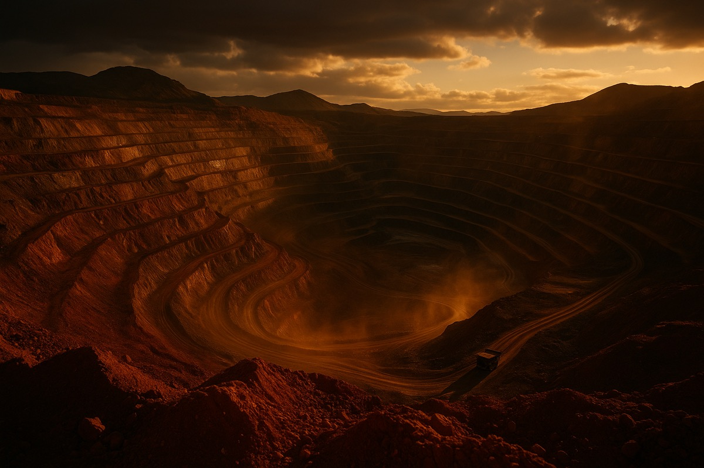

Transforming mining tailings into the building blocks of a sustainable future
$400B+ concrete market · 8 billion tons of tailings annually · One elegant solution
of mining tailings generated annually worldwide
Billions of tons of tailings create environmental risks, contamination threats, and massive storage costs for mining operations globally.
The construction sector produces 8% of global CO₂ emissions, primarily from cement production and material manufacturing.
Two massive problems, one elegant solution — bridging mining waste management with sustainable construction materials. Up to 95% waste diversion.
At the intersection of two global industries lies unprecedented potential for sustainable innovation
Global Concrete Market
Annual market size and growing
Tons of Tailings
Generated annually worldwide
Waste Diversion
Tailings diverted from landfill
From waste to worth in three transformative stages
Sourcing mining byproduct — 200 tons of tailings generated per ton of ore extracted — from copper and iron operations, recovering a waste stream with massive potential.
Proprietary alkali-activation process achieving up to 70% cement replacement — and 100% for geopolymers. Recovers valuable metals and water while diverting 95% of waste from landfill.
Three product lines — Artificial Aggregates (824–1,002 kg/m³), Geopolymers (100% tailings), and Concrete Paste (up to 70% cement replacement) — for sustainable cities.
Low investment, high return. Adaptable to any mining operation with proven results.
View Full Product RangeA precision-engineered metamorphosis — from mining waste to city infrastructure
Copper mining generates billions of tons of waste tailings annually — gray-brown mountains of untapped potential, sitting idle across desert landscapes worldwide. What the industry sees as a liability, we see as a resource.
Industrial-scale logistics collects and transports tailings from mining sites to our processing facilities. No new mining required — we transform what already exists, using established infrastructure.
The transformation moment. Proprietary alkali-activation chemistry converts inert waste into high-performance binding materials — a controlled reaction that turns gray dust into engineered matter.
Precision molds and industrial curing produce construction-grade materials — concrete blocks, paving stones, and structural elements with performance matching or exceeding traditional alternatives.
Kura products are deployed in buildings, roads, and public infrastructure across urban landscapes. What was once waste now forms the foundation of sustainable cities — completing the circular economy.
Waste Diverted
Less CO₂ Emissions
Product Categories
See how leading organizations are building sustainably with Kura Materials
Chile · Active since 2024
Converting 2,400 tons of copper tailings daily into construction-grade materials, eliminating the need for a new tailings dam expansion.
Chile · Phase 1 Complete
14 km of sustainable paving, 200+ urban furniture pieces, and eco-concrete foundations for a new public transit hub.
São Paulo · Completed 2025
32-story commercial tower using Kura eco-concrete for foundations and structural elements, achieving LEED Platinum with record-low embodied carbon.
Working with leading organizations to build a sustainable future
Construction Firms
Major infrastructure contractors
Mining Companies
Global copper & iron operators
Municipalities
Cities & urban planners
Research Institutions
Universities & material science labs
"Kura Materials is revolutionizing how we think about construction materials. Their eco-concrete has exceptional performance while dramatically reducing our carbon footprint."
— Construction Director, Major Infrastructure Project
"The geopolymer technology from Kura represents a breakthrough in sustainable building materials. We've seen remarkable durability and environmental benefits."
— Chief Sustainability Officer, Global Developer